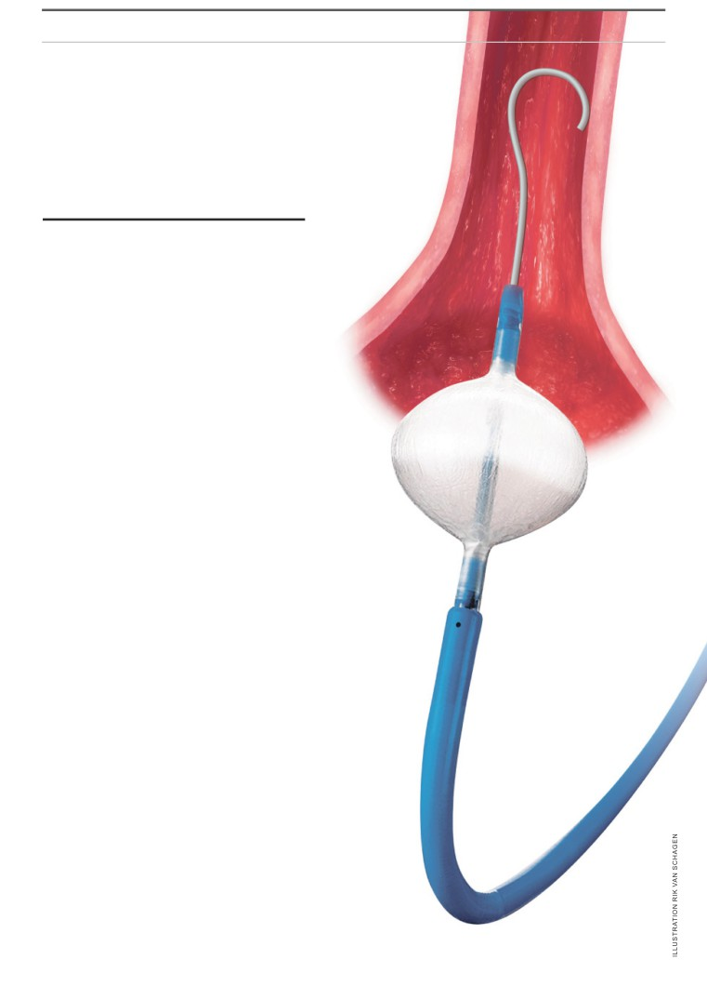
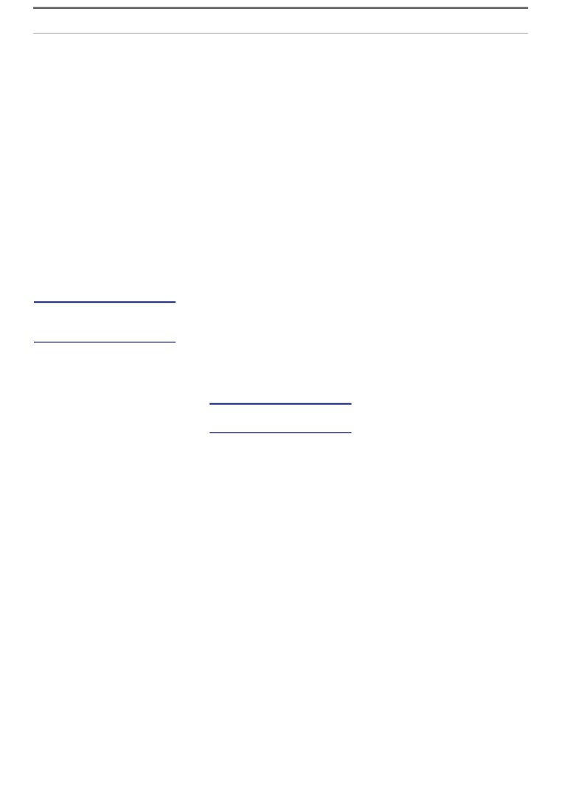
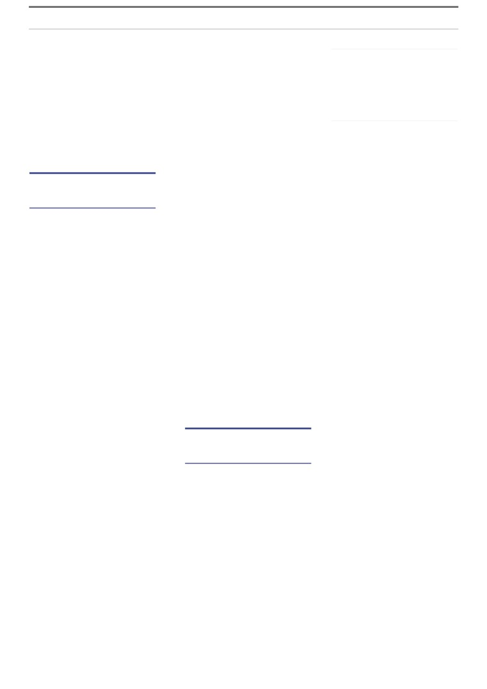
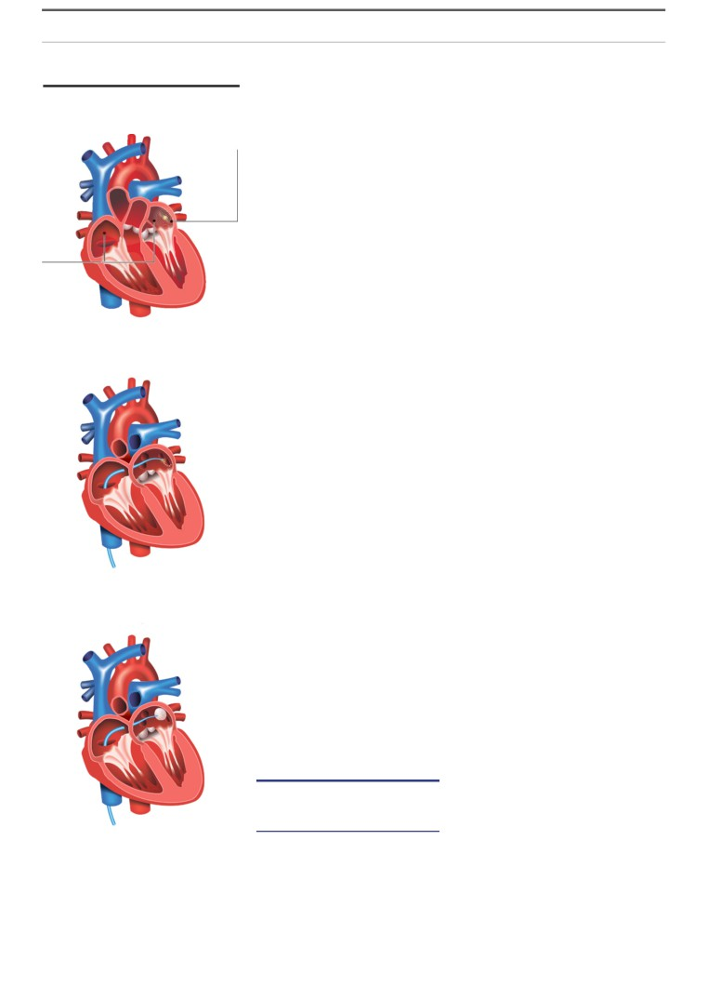
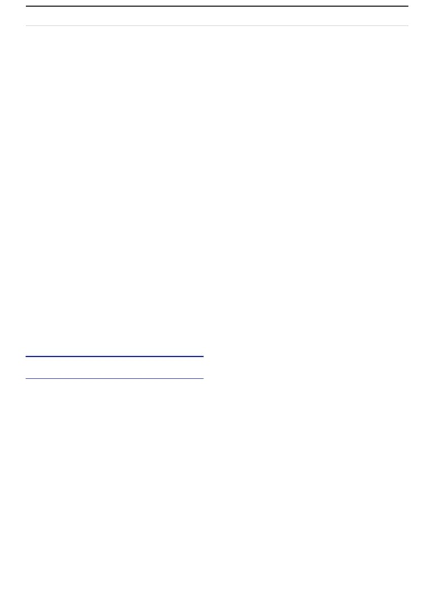

NRCWeekend
Weekend
SATURDAY 24 SEPTEMBER & SUNDAY 25 SEPTEMBER 2016
Patients were unaware of the study
Dean and board member of the Erasmus MC, Jaap
ERASMUS MEDICAL CENTER
Verweij, does not agree that the patients needed to be
informed. He believes that the study was not carried
Heart patients participated in a clinical
out on the patients themselves, though “on the patients’
trial without their knowledge. The trial was
files”. It is for this reason that the patients were not
to test a new surgical procedure which
extra burdened and why the study does not fall within
had not yet been deemed safe for use.
the scope of the law, he argues.
The hospital’s professor Luc Jordaens is now of the
By our reporters
opinion that the hospital should have submitted the
Karel Berkhout and Esther Rosenberg,
study for review to a committee. He only told a few
24th September 2016
patients that they were participating in a clinical trial.
“If I had somebody who just said ‘You are the doctor. Do
ROTTERDAM. In the Erasmus Medical Center in
what you need to do’, then you don’t have to tell them
Rotterdam 141 heart patients took part in a clinical
everything.”
trial without their knowledge. This is a breach of law
The balloon came on the market in July 2005. A
according to experts. The patients were operated on
month later all Erasmus MC patients who suffered
using a new procedure despite no-one yet knowing
from a certain type of heart rhythm condition were
whether the method was safe.
only operated on using the balloon. This decision was
This finding was the result of an investigation by
made on the basis of ‘common sense’, according to the
the Dutch leading newspaper, the NRC. The patients
hospital. However, the cardiologist involved, Yves van
suffered from atrial fibrillation and were operated
Belle, thinks that it was also done to be able to enter
on using a newly developed cryoballoon, an ablation
enough patients in the trial.
catheter with a balloon at the end which is filled
with a coolant. The patients also had to monitor and
According to the lawyer of one of the patients, Maya
forward their heart rhythm every day for four months.
Spetter, “a crime has been committed”. She is currently
It concerned a study into ‘the safety’ and ‘feasibility’
preparing a legal procedure against those involved.
of the balloon, the cardiologists wrote afterwards in a
publication. The study took place between August 2005
[+] Complications: page 22-23
and August 2007. To this day, two patients still suffer
from the consequences of the complications which
arose during the surgery.
The Dutch Medical Research Involving Human
Subjects Act
(Dutch abbr. WMO) states that an
accredited medical research ethics committee must first
approve a research with human subjects. It also states
that patients must first sign a form stating that they are
aware that they are participating in the study and that
they consent to this. That didn’t happen in this case.
According to professor of medical law, Johan
Legemaate, the study fell within the scope of this law.
After all, it was to test “a new technique, whereby a device
is placed in the body of the patients.” The then director
of the umbrella organization of medical research ethics
committees (Dutch abbr: CCMO), Marcel Kenter, also
believes that the study fell under this law.
2

Weekend
Absolutely
no chance of any
complications
MEDICAL RESEARCH
Doctors from the Erasmus MC in
Rotterdam studied the effectiveness
and the safety of a new surgical
instrument for atrial fibrillation,
without the patients knowledge. The
cardiologist: “If I just had a patient
who said: ‘You are the doctor’ then I
didn’t tell him.”
By our reporters
Karel Berkhout and Esther Rosenberg,
24th September 2016
he is operated on. The surgical
procedure has no known
H
ans Westerweel prepares
complications, the professor
clay in his studio in the village
told him in a consultation in
of Tholen in the south-west
his office. The surgeon also
of the Netherlands, when his
assures him. There will be a few
heart starts beating rapidly for
drops of blood at the most. Two
the first time. A heart rhythm
nights in hospital after which he
condition, is what the doctor
can return home. It turns out
declares when Hans is admitted
differently. The surgical report
to the emergency room. More
is frightening. His pulmonary
specifically, atrial fibrillation.
artery ruptures. The bleeding
His heart will receive these
“persists”. “Surgical assistance”
impulses more often which will
is called for. The patient is
cause disruption, the doctor
moved to the
“operating
warns. Nothing to worry too
theater”. The situation is
much about. Medication helps
life-threatening. When he is
for a while.
brought into theater he still
The artist is then 54 years
has a “rhythm though there is
old, teaches Dutch at a college
no output”. He is “externally”
and often travels with friends
massaged. The pericardial sac
to remote areas in Norway. He
is opened “urgently”. “A large
wants to get rid of the impulses,
amount of clear red blood is
the fear of a stroke and the
released under high pressure.”
terrible fatigue. He is referred
There appears to be “a large
to professor Luc Jordaens at
perforation in the upper left
the Rotterdam Erasmus MC
pulmonary artery. After many
who says he can treat him. He
hours the chest is closed “with
consults him three times.
seven steel threads”.
On the 27th of February 2007
3

NRCWeekend
Weekend
SATURDAY 24 SEPTEMBER & SUNDAY 25 SEPTEMBER 2016
Westerweel regains conscious-
Rotterdam Erasmus MC studied
that this condition could be
ness after two days in intensive
the safety and effectiveness of the
treated with frost instead of fire,
care. Cardiologist Yves van Belle,
cryoballoon without the patients
and that the frozen approach was
who started the surgery, told
knowing. “We are now publishing
a quicker and safer procedure.
him what went wrong. “He said
the first human data in this field”,
They set up a company which
that my pulmonary artery had
the doctors proudly declared in an
they called Cryocath. It was only a
ruptured after the cryoballoon
initial publication.
small step in the thinking process
was inserted.“
The in total
141 patients
to move from a frozen catheter
A balloon? It’s the first time
appear to have participated in an
tip to a balloon at the end of the
Westerweel has heard anything
important clinical trial. According
catheter, which would be blown
about a balloon. The comment
to experts, an accredited medical
up and frozen once placed in the
sticks in his mind in the months
research ethics committee should
left atrium. This would make the
spent recovering at home. He
have first approved the study. The
precise point-by-point procedure
searches the internet, makes some
patients should have agreed to
unnecessary. By using a frozen
calls. And then one day his partner
participation by means of the so-
balloon a lesion circle is formed
meets a friend in the supermarket
called informed consent.
instantaneously.
who she tells what happened to
The NRC investigation showed
The balloon was given the name
Hans. That’s strange, says the
that the patients were unaware
Arctic Front. It was tested on pigs
friend. A farmer in a nearby village
that they were being treated with
and seemed to be technically
had a similar experience with a
a new and therefore potentially
sound. In Prague the device
balloon.
more risky procedure and that they
was used on 20 patients. This
were taking part in a clinical trial,
was sufficient to gain European
let alone sign for consent. Serious
authorization on the 14th of July
Europeans being used
and sometimes unforeseeable
2005. In Canada and the United
as guinea pigs
incidents were not reported to the
States it would take another five
Dutch Healthcare Inspectorate.
years before the balloon would be
The hospital is still of the opinion
allowed on the market.
Companies strive to come up
that the patients did not need to
If you wish to publish study
with new medical devices for
know that they were taking part in
results you must have a sufficiently
improving patients’ health - for
the study.
large study population. As soon as
example a new kind of pacemaker,
the balloon was authorized for use
lens, or in this case a cryoballoon.
the Erasmus MC threw its existing
These new medical devices are first
Frozen catheter tip
treatment using the heated
introduced in Europe as here the
catheter method for patients with
only condition which has to be met
a certain type of heart condition
is demonstrating that the device
The fact that the patients
out of the window. However, at
works. On the other hand, in the
underwent surgery was not
that moment the doctors had no
United States proof must also be
surprising. Their atriums
(heart
experience with the balloon. They
provided that the device is safe to
auricles) contracted rapidly and
didn’t know if the new procedure
be used in patients by performing
irregularly, a condition called
was safe and effective for patients
clinical trials over many years.
atrium fibrillation, which is
in the long term and whether it was
A recent article on this was
associated with old age. One in
better than the heated catheter
published in the medical journal
five people over the age of seventy
treatment. Nevertheless, from this
The BMJ. Of the 309 implantable
suffers from it. Medication
point on patients are only treated
medical devices which were placed
temporarily
suppresses
the
with the new balloon method.
on the market between 2005 and
symptoms but the condition
Cardiologist Van Belle said this
2010, something went wrong in
worsens as time goes by. In that
was in order to be able to include
27 percent of those used in Europe
case it can help to isolate the
enough patients in the study:
and only 14 percent in the United
pulmonary arteries in patients
“That was one of the reasons. If
States.
who are able to cope with this
you want to publish study results
Europeans appear to be
physically. A catheter is entered
then you need a sufficiently large
being used as guinea pigs for the
via the groin artery into the heart,
population.” The researchers
American market despite being
where it pierces through the right
aimed for 150 patients. In the end
unaware of this. For example,
atrium into the left one. Tip by
they had 141.
doctors are not required to inform
tip, the catheter burns around the
Studies such as those in
a patient that they are the first in
pulmonary arteries until circles
Rotterdam are necessary for
which a new sort of hip implant
of lesions are formed. These
turning new medical devices into
is placed. Only if the procedure
scars should stop the undesired
successful products, explains Jan
is part of a clinical trial must they
impulses to the heart. This is how
Keltjens. He was the CEO of the
inform the patient. And even then
it has been carried out since the
stock exchange listed company
this isn’t always the case.
nineties.
Cryocath.
“Studies carried out
Between August
2005 and
Canadian engineers discovered
with the aim of gaining market
August
2007 doctors in the
at the beginning of this century
4

NRCWeekend
Weekend
SATURDAY 24 SEPTEMBER & SUNDAY 25 SEPTEMBER 2016
authorization are limited anyway.
was told that it was unnecessary to
You want to show that the
apply for approval and so he didn’t.
After about twenty
results are sound in longer-term
And that’s why the patients didn’t
procedures you start to
studies.” The Rotterdam study
sign an informed consent. But why
notice that they go more
was important, he says. It was one
did Van Belle write in his thesis
smoothly.
of the first large-scale studies into
that all the patients did sign it? “I
CARDIOLOGIST YVES VAN BELLE
the balloon.
“Erasmus MC was
thought the patients had signed
a large center and was therefore
it”, Van Belle now says. He didn’t
able to rather quickly enter a lot of
check. Jordaens arranged it, he
patients into a database.”
thought. Though Jordaens in turn
The study has begun.
thought that the PhD student had
arranged informed consent.
On a Saturday morning Jordaens
is sitting with a laptop next to him
Start with the opinion
and a briefcase full of documents
leaders
in the lobby of the Sheraton Hotel
in Brussels, across from the private
clinic where he now works. He
Luc Jordaens is an excellent
says he can’t remember everything
research leader. He is a respected
that happened. It was all so long
professor who is enthusiastic to try
ago. When asked whether he
new techniques and is known for
remembers at least telling his
table. His wife is seated next to him.
his ‘good hands’, as the saying goes.
patients that they were taking part
He was supposed to have the
He is someone who can make a
in a clinical trial into the safety
heated catheter treatment and
new product a success and who can
and effectiveness of a new medical
was placed on the waiting list for
present that success with authority
device, he leans forward: “If I had a
six months. However, Jordaens
to his peers, in congresses and in
shrewd patient in front of me then
called him earlier at home.
“He
journals. Keltjens:
“My idea was
I would definitely have told him”,
said: I have something new. The
always: start with the opinion
he says. “But if I had a patient
result is better and it is much safer.
leaders. Convince them of the
who just said ‘You’re the doctor.
Complications can occur during
potential of the medical device.
Do what you have to do’, then you
the burning method. That doesn’t
They are the best sellers, the best
don’t have to tell them everything.”
happen at all with the freezing
advocates for your technology.”
Though how many patients asked
method. He said: you are the ideal
For the first important studies with
coincidentally on their own accord
patient, you are still young.“ The
the balloon the company “doesn’t
whether they were taking part in a
surgery was called off twice. The
want doctors who are only out
clinical trial? “Very few”, he admits.
machine wasn’t working. Then he
to prove that something doesn’t
“Very few.”
was scheduled for the morning
work.” Jordaens is on the scientific
advisory board of Cryocath and
after Easter Monday 2006.
attends meetings.
He presses his thumb and finger
A race ensues to see who can
together and then opens them to
Bang. Another balloon
publish first. Three German
show how he felt the balloon pop
pops
centers are carrying out the same
next to his heart. Again and again.
study. Jordaens hires the young
Bang. He was on the operating
cardiologist Van Belle who has
Piet van der Slikke
(67) was
table from seven thirty, totally
never used the balloon before
still young when he took over his
conscious. The professor, another
and who plans to use it for his
parents’ arable farming company
doctor and a Cryocath technician
PhD thesis. He hopes that the
in Poortvliet in the in the south-
were at his side. First the catheter
study will form the basis for his
west of the Netherlands. Eighty
went through his heart and then
scientific career. Van Belle: “You
hectares of fields with celeriac,
accidentally into his wind pipe.
want to write an article which
onions, carrots, sugar beets and
“Jordaens has to come back”, he
will be popular for references in
brussels sprouts. He sold the crops
heard. Panic ensues. “Cursing and
the future. So if you’re the first to
at auction. He was almost never ill.
swearing.” Around 12 o’clock the
publish, then articles that appear
Once he had suffered from a groin
professor assured him everything
later will refer to your paper.”
rupture and once he was operated
was okay.
“He said: we have
The study is not submitted to
on a lifter’s elbow. This was caused
everything back under control.
the hospital’s accredited medical
by the repetitive movement when
What do you think? I said: I’m here
research
ethics
committee.
harvesting sprouts, eventually
anyway. You are the professor.” He
Jordaens goes about it in a
causing wear on his tendons. And
still felt fine then.
different way. He says he spoke to
then his heart started playing up.
Each new balloon brought
the esophageal surgeon, who is also
He was also referred to Jordaens in
with it a fresh round of pain. The
chair of the committee, for half an
Rotterdam in the summer of 2005,
catheter went from his groin to
hour in his office. He says that he
he says whilst we talk at his kitchen
his heart and then bang, another
5

NRCWeekend
Weekend
SATURDAY 24 SEPTEMBER & SUNDAY 25 SEPTEMBER 2016
TREATING ATRIAL FIBRILLATION
balloon popped. A basin of water
internationally renowned French
was brought to pre-heat the
cardiologist Pierre Jaïs labels these
Electric impulses from the pulmonary arteries
balloon. And again, bang. The
complications as
“significant”
disturb the normal contraction of atrial
doctors “were cursing like sailors”.
with “serious complications in 8.6
muscles.
(Jordaens now says: “Those things
percent of the patients”.
should have worked.”) Then they
The balloon is improved on the
Disruptive
impulses
tried a different sized balloon.
basis of the experiences in studies
Bang. One over the other, try that.
such as the one carried out in
Bang. A pair of pincers, where are
Rotterdam. Cryocath altered the
Pulmonary
the pincers? Someone stood on the
product information on the balloon
vein
catheter. In his memory, fifteen
after the incident with Hans
perhaps twenty balloons burst next
Westerweel’s ruptured pulmonary
to his heart. Bang. Bang. Towards
artery. It also later altered the
Atrium
evening he thought death would
shape, the balloon was made
release him.
softer, the circulation of the cold
He also was placed on intensive
within the balloon was improved.
care. For days he was vomiting
The doctors became more skilled.
blood, half a bowl a day. Each breath
At what point did the young PhD
brought with it an internal bubbling
student feel like he was getting the
sensation. His chest was black and
hang of the technique? Van Belle:
Standard procedure
blue from the bruising. For the first
“After about twenty procedures
two months after surgery he could
you start to notice that they go
only sleep in a seated position. The
more smoothly and that you get the
doctors dismissed his complaints.
job done without problems.” And
One even said that perhaps it was
at what point did he feel like he had
the weather that was causing them.
really mastered it? “After about a
That was the first time he lost his
hundred procedures, then it went
temper. He can’t sleep and has
very smoothly.”
suffered from trauma “for many
In the summer of
2008 the
years”, says his wife. He looks at
Germans were the first to publish
her. “Yes, well”, he says.
on a large-scale study. They wrote
In
the
two Rotterdam
that the heart complaints had
publications which were written
disappeared in seven to eight of
on the study and which appear in
the ten patients. The Rotterdam
Van Belle’s thesis, the surgery is
doctors only published their results
rather coolly labeled as ‘equipment
in the autumn of that year. Their
A catheter makes it way to the heart via the
groin artery. Small scars are made around the
failure’. The doctors learned that
results were also less positive,
artery.
day that in the future they would
around six in ten patients were
need to have an extra freezing
symptom free. Furthermore, their
Cryoballoon procedure
machine present and that’s what
publication is accompanied by the
happened. Did the farmer know
critical commentary of the French
that he was participating in a
cardiologist.
“That was not well-
clinical trial? No, he and his wife say
received by Cryocath”, Van Belle
emphatically. Was he told anything
remembers. He was not invited by
about a balloon? “No. Nothing.”
them to discuss the results. The
About any possible complications?
Germans, on the other hand, were.
No. The new procedure was
“My research was well-received
supposed to be better. Safer.
at large congresses, but it was
the Germans who were standing
on stage actually presenting the
discussion on the balloon.” Did
A take-over worth
Cryocath ever try to influence the
millions
results? “No. They said: you can
A catheter makes it way to the heart via the
publish your findings, it’s just a
groin artery. A balloon is expanded at the
shame there is so little to publish.”
It is not known what became
opening of the artery which is subsequently
There’s a lot at stake at the
frozen for four minutes. A neat circle of scar
of the other
139 patients. The
tissue is formed.
time for the company. It’s going
publication in 2008 in the journal
through a period of speedy growth.
Europace
reported
around
The professors on the front-line,
thirteen
complications;
Van
like Jordaens, are responsible for
der Slikke’s complication is not
training doctors selected by the
included. In a commentary listed
company. The then CEO Keltjens
along with the publication the
6

NRCWeekend
Weekend
SATURDAY 24 SEPTEMBER & SUNDAY 25 SEPTEMBER 2016
said: “Slowly we built up a sales force.” However, the
Then suddenly they said that the study had not taken
introductory losses are too high. And then one day the
place at all: the surgery and the measurements “were
American company Medtronic arrives on the doorstep.
carried out in the interest of the patients and not as part
It is the world’s largest producer of medical devices. On
of a research” (dean and board member Jaap Verweij,
the 25th of September Medtronic announced that it was
November 2013). Then the hospital declares that study
buying Cryocath, which at the time had a turnover of 38
had taken place, though it concerned a retrospective
million American dollars, for 380 million dollars.
study. That is a study whereby doctors decide afterwards
Keltjens: “I remember the phone call well. I was in
on a rainy day that all 141 surgeries and intensive
Luc Jordaen’s office and saw that Medtronic called.
measurements could be interesting enough to publish
I stepped outside, onto the fire escape and then onto
on. More defensive arguments follow.
the roof. And that’s where I heard: we are going ahead
In a meeting this week both dean and board member
with the takeover.” His company has just recently gone
Jaap Verweij of the Erasmus MC and the current head
through a re-organization, the balloon is “about to
of department of Cardiology Felix Zijlstra still argue
be put on the market in America” and the Rotterdam
that the patients did not have to know. Even by today’s
publication has just been accepted by an influential
standards. However, they did say that nowadays things
journal. Keltjens now says: “If the study had shown
are done differently. Patients are better informed. All
that the balloon didn’t work properly, then the takeover
studies are submitted to the committee.
would never have taken place.”
The patients did not need to be informed since they
Therefore, thanks to the 141 patients in Rotterdam
would not experience an extra burden, is the argument
there were two scientific publications and a PhD thesis,
given. After all, the surgery and the measurements
a better and safer and in turn more profitable product
were necessary procedures anyway. Do patients who
and an international takeover worth millions. Does
nowadays undergo the surgery still have to monitor
Jordaens now think in retrospect that he should have
and forward their heart rhythm at least once daily both
informed the patients more sufficiently? Yes, he says.
before and for four months after surgery? Verweij: “Yes,
Not only because of the surgery involved, though also
they do”. The current extensive on-site patient brochure
because the patients were required to monitor and
states that patients must monitor and forward their
forward their heart rhythm for one to three months post-
heart rhythm every day for one month and then later
surgery from their own home. That is imposing rules of
again for one month. According to the hospital, the
behavior. He says that he “absolutely” got carried away
Dutch Healthcare Inspectorate was not informed of the
by his enthusiasm for the balloon. “When we published
incidents as it only concerned “expected complications”.
on the 141 patients and I realized that we couldn’t say
Hans Westerweel lost his job. The complications
that a medical research ethics committee was involved,
made it impossible for him to continue working. Piet
I saw this as a very significant shortcoming. I can never
van der Slikke continued to suffer from heart problems.
allow the same thing to happen again, I thought.”
A cardiologist in Maastricht had to carry out new
surgery, this time with the heated catheter method. He
told him up front what he could expect, even possibly a
heart attack, and that’s what happened. But that’s not
Whole and half truths
what bothers him the most: “If you are told up front
what to expect, then it makes it easier to accept it than if
you hear afterwards that you were used as a guinea pig.”
The Erasmus MC does not agree. Westerweel
maintained extensive correspondence with the hospital
for many years in which he was given whole and half-
truths. It all came down to the following: neither he
nor the other patients needed to know that they were
participating in a medical study, according to the
hospital.
At first they argued that Westerweel “was not part of
this study” (hospital lawyer, May 2013). Though both
researchers confirmed that he was part of the study.
7
NRCWeekend
Weekend
SATURDAY 24 SEPTEMBER & SUNDAY 25 SEPTEMBER 2016
INFORMATION OBLIGATION
Patients are supposed to be
informed of a clinical trial
The rights of patients who participate in a clinical trial
Only later were the research data collected and published.
were laid down in 1964 in the Declaration of Helsinki.
“Observational research does not fall under the scope
It states that the patients’ interests must always come
of the law”, says Verweij, “as patients do not undergo a
before the interest of the medical research. It is for
different treatment as part of the research”.
this reason that patients are always required to sign an
‘informed consent’ before the trial takes place. By doing
The experts’ view:
so they declare they have been fully informed on the aim
The AMC’s professor of medical law Johan
and possible risks of the trial and agree to these.
Legemaate says that in this case you cannot maintain
In the Netherlands, these basic principles have been
that it was only an observational research.
“In this
embedded since 1999 in the Dutch Medical Research
case it appears to relate to a new technique, whereby a
Involving Human Subjects Act (Dutch abbr.: WMO).
foreign object is placed in the body of a patient. Such
It states that doctors who want to carry out a clinical
an intervention falls within the scope of the Dutch law.”
trial must have prior approval by an accredited medical
Furthermore, he believes the Erasmus MC’s argument is
research ethics committee (MREC). These committees fall
not logical. “Why would you want to study the safety and
under the supervision of the national Central Committee
effectiveness of a technique if the treatment is a regular
on Research Involving Human Subjects (Dutch abbr.:
one?”
CCMO). Medical research is a study whereby human
Marcel Kenter was director of the Central Committee
subjects are subjected to procedures or are required to
Involving Research with Human Subjects (Dutch abbr.:
follow rules of behavior. This type of research therefore
CCMO) when the research into the balloon was being
falls under this legislation. However, the legislation leaves
carried out. According to him the aim of the research
some room for interpretation. Say a hospital introduces a
“determines” whether it falls within the scope of the Dutch
new treatment which can be seen as a minor alteration
legislation: is the aim to increase the local quality health
of an existing one. And that doctors only have to register
care in the hospital, or increasing scientific knowledge?
some patients’ data in order to be able to evaluate the
The researchers argue that it concerns a study whereby
treatment. This type of research does not fall under the
the aim and research method were pre-determined - a
scope of the legislation.
prospective study. “If the researchers themselves say
that it concerns a prospective study into the safety and
So, what is the case with the balloon study?
feasibility of the new balloon technique, then how can
you conclude that it is anything other than a study which
The Erasmus MC:
falls under the scope of the Medical Research Involving
According to the hospital a regular treatment was
Human Subjects Act?”
provided in this case. Not because it was similar to the
old one, though because the hospital had decided so mid-
August of that year. It was “a management decision”,
says the current head of Cardiology Felix Zijlstra. The
decision was not made on the basis of publications in
medical journals though on “common sense”. Medical
research was not carried out on the patients, though on
“patients’ files”, says the dean and board member Jaap
Verweij. And it is for this reason that patients were not
unnecessarily burdened.
The study was observational. That is to say that the
patients didn’t have to undergo an intervention for the
study. The doctors kept records of the patients’ progress.
This article is a translation of the
news that was published in the Dutch
newspaper NRC Handelsblad on
Saturday September 24th 2016 with
permission from the publisher.
8